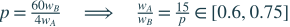
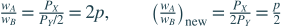
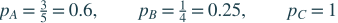
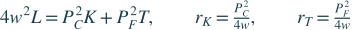
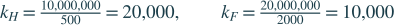
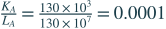
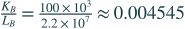
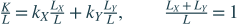
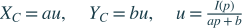
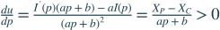

第 1 章 緒論
目前提供的第一章課本共 9 頁，以正文結束，未包含章末習題。此處保留章節位置，待取得習題頁後補入原題與參考解答。
第 2 章 李嘉圖模型：古典貿易理論
第 1 題 絕對利益與比較利益
題目連結何謂絕對利益原理？何謂比較利益原理？兩種理論有何差別？試比較之。
參考解答
絕對利益（absolute advantage）比較同一商品的生產效率，使用較少資源者有絕對利益。比較利益（comparative advantage）比較生產一財必須放棄另一財的機會成本，機會成本較低者有比較利益。貿易分工依比較利益，即使一國對所有商品都有絕對利益，只要兩國相對成本不同，仍可透過各自專業化及交換獲利。
第 2 題 在同圖畫出兩國生產可能線
題目連結假設 A、B 兩國擁有相同的資源，A 國在生產鋼鐵和小麥上具有絕對利益，同時生產鋼鐵上具有比較利益。請在同一個圖形中畫出 A、B 兩國的生產可能曲線。
參考解答
橫軸放鋼鐵、縱軸放小麥。相同資源下 A 對兩財都有絕對利益，所以 A 的兩軸截距都比 B 遠。A 生產鋼鐵的機會成本較低，所以 A 線的斜率絕對值較小。重繪圖以 A 截距（120，80）、B 截距（60，60）示意，A 生產一單位鋼鐵放棄 2/3 單位小麥，B 則放棄 1 單位。這組數值只用於滿足題設作圖，不是原題給定數字。

第 3 題 勞動成本、交換利益與相對工資
題目連結A、B 兩國生產一單位 X、Y 所需勞工天數如下。A：X 為 100 天、Y 為 4 天。B：X 為 60 天、Y 為 3 天。（a）兩國無貿易時，X 以 Y 表示的均衡價格各為何？（b）各對哪種產品具有比較利益？（c）若 1 部電腦交換 22 個小麥，各國每單位進口商品可節省多少勞動天數？（d）改為交換 24 個小麥時呢？（e）均衡貿易條件範圍為何？（f）貿易後相對工資率範圍為何？（g）從世界與個別國家觀點討論貿易利得及其分配。依題目脈絡，以下以電腦為 X、小麥為 Y。
參考解答
（a）競爭下價格等於工資乘單位勞動需求，同國工資相消，所以相對價格等於單位勞動需求之比。A 為 25，B 為 20。（b）B 生產 X 的機會成本較低，出口 X。A 出口 Y。
（c）A 進口一部電腦，需出口 22 單位小麥，花 22×4＝88 天，比自製 100 天少 12 天。B 進口一單位小麥只需出口 1/22 部電腦，花 60/22 天，比自製 3 天少 3/11 天。
（d）同理，A 每部進口電腦節省 100−24×4＝4 天，B 每單位進口小麥節省 3−60/24＝0.5 天。兩國的「每單位進口品」不同，不應把兩個節省天數當成同一商品直接比較。
（e）價格介於 20 與 25。要讓兩國都嚴格獲利，須 20＜p＜25。端點時有一國對邊際交換無額外利益，是否成為均衡還取決於世界需求與國家規模。（f）A 專業生產 Y，B 專業生產 X，所以 P_Y＝4w_A、P_X＝60w_B。相除並解出相對工資，得到 0.6≤w_A/w_B≤0.75。

（g）世界依比較利益分工可節省總勞動，使相同資源支撐更多消費。個別國家在內部價格之間交換也可獲利，但分配受貿易條件影響。p 從 22 升至 24，B 出口電腦換得更多小麥，利益增加，A 進口電腦更貴，利益減少。相對價格更靠近哪國自給價格，該國新增交換利益就較小。
第 4 題 南韓、日本的鋼鐵與錄放影機
題目連結每人每天產量如下：南韓鋼鐵 80 噸、錄放影機（VCR）40 臺，日本鋼鐵 20 噸、VCR 20 臺。（a）兩國生產一臺 VCR 的機會成本各為多少？（b）開放貿易後的貿易型態為何？（c）貿易條件與均衡工資範圍為何？（d）日本鋼鐵產量提高至每人每天 60 噸後，貿易型態如何改變？
參考解答
（a）一天用來做 VCR 就放棄當天可做的鋼鐵，因此南韓一臺成本為 80/40＝2 噸，日本為 20/20＝1 噸。（b）日本出口 VCR，南韓出口鋼鐵。（c）令 p 為每臺 VCR 換得的鋼鐵噸數，1≤p≤2。南韓每天工資為 80P_鋼，日本為 20P_VCR，兩者相除得 w_韓/w_日＝4/p，因此範圍為 2 至 4。題目未給貨幣價格，不能求各國工資的絕對金額。
（d）日本新的一臺 VCR 機會成本為 60/20＝3 噸，高於南韓的 2 噸。因此貿易方向反轉，日本出口鋼鐵，南韓出口 VCR。比較利益會隨相對生產力改變。
第 5 題 由勞動限制求 PPF 與自給價格
題目連結A 國有 1000 位勞工，生產一單位 X、Y 各需 1 人。B 國有 2000 位勞工，生產一單位 X 需 4 人、Y 需 2 人。（a）畫出兩國生產可能線。（b）兩國未貿易前，X 以 Y 表示的均衡價格各為何？
參考解答
（a）先將「每單位所需勞動×產量」加總，等於充分就業的總勞動，再解出 Y。令其中一財產量為零，就得到另一財最大產量，據此畫直線。
A 的兩軸截距皆為 1000，B 的 X 截距為 500、Y 截距為 1000。（b）自給且兩財皆生產時，相對價格等於機會成本，即 PPF 斜率的絕對值，因此 A 為 1，B 為 2。

第 6 題 技術同幅改善是否改變比較利益？
題目連結延續第 5 題。（a）兩國各對哪種財具有比較利益？（b）均衡貿易條件範圍為何？（c）貿易後 A、B 工資是否相同？（d）若 B 生產兩財所需勞動都減為原先的 1/4，新投入量為 X 需 1 人、Y 需 2/4 人，A 維持各 1 人，貿易型態是否改變？
參考解答
（a）A 的 X 機會成本 1 低於 B 的 2，所以 A 出口 X、B 出口 Y。（b）1≤p＝P_X/P_Y≤2，嚴格互利取內部。（c）A 工資為 P_X，B 工資為 P_Y/2，因此 w_A/w_B＝2p，介於 2 至 4，不會均等。李嘉圖模型允許兩國技術不同，不能套用相同技術的要素價格均等定理。（d）B 新的機會成本為 1/(1/2)＝2，與原來相同，因此比較利益及出口方向不變，但產能、相對工資與均衡價格可能改變。

新工資式的分母為 2P_Y，因 B 每單位勞動可生產 2 單位 Y。新相對工資範圍為 0.5 至 1，說明均等比例技術進步雖不改變比較成本比率，仍能提高 B 的相對工資。
第 7 題 相反絕對利益如何推出比較利益？
題目連結舉例說明：若 A 對 X 有絕對利益、B 對 Y 有絕對利益，則 A 必對 X 有比較利益、B 必對 Y 有比較利益。
參考解答
例如 A 生產一單位 X、Y 各需 1、4 小時，B 各需 3、2 小時。A 做 X 更省時，B 做 Y 更省時。A 的 X 機會成本為 1/4 單位 Y，小於 B 的 3/2，故 A 對 X 有比較利益，B 對 Y 有比較利益。一般而言，a_AX＜a_BX 且 a_AY＞a_BY，兩次不等式相乘即可得 a_AX/a_AY＜a_BX/a_BY。
第 8 題 相同比較成本與單一產業技術進步
題目連結A 生產一單位 X、Y 需 10、8 人，B 需 5、4 人。（a）兩國可以進行貿易嗎？為什麼？（b）若 A 的 X 需求勞動由 10 降至 5 人，兩國可以貿易嗎？各對哪一財有比較利益？
參考解答
（a）兩國 X 的機會成本皆為 1.25 單位 Y，沒有以比較成本差異產生的嚴格貿易利益。可以在相同價格交換，但基本李嘉圖模型下不會因此增加消費可能性。（b）A 新的機會成本為 5/8＝0.625，小於 B 的 5/4＝1.25，所以 A 出口 X、B 出口 Y，當價格介於 0.625 與 1.25 時可互利。
第 9 題 三國的比較利益排序
題目連結每單位 X、Y 所需勞動：A 為 3、5 人，B 為 1、4 人，C 為 2、2 人。（a）三國可以相互貿易嗎？（b）若 1 單位 X 交換 0.5 單位 Y，各國出口財為何？
參考解答
先求各國 X 的機會成本，再將國際價格與各自成本比較。售價高於自製 X 的機會成本時，生產 X 出口比直接做 Y 划算。

（a）三國相對成本不同，有貿易基礎。B 最適合 X，C 最適合 Y，A 的方向依世界價格而定，不必每兩國間都同時存在直接交易。（b）p＝0.5 高於 B 的 0.25，B 出口 X。p 低於 A 的 0.6 及 C 的 1，所以 A、C 出口 Y。題目只給定價格，沒有資源與需求資料，尚不能證明 0.5 就是世界均衡價格。
第 10 題 高低工資國可以互利嗎？
題目連結依題目引用的《經濟學人》1996 年調查，美國、德國每小時工資分別為 17、32 美元，中國為 25 美分。三國可以貿易嗎？美、德分別與中國貿易，對中國是剝削嗎？請說明。
參考解答
可以。成本取決於工資與生產力共同作用，高工資國若生產力也高，仍能在部分商品具有較低單位成本。中國即使各產業生產力都較低，仍可專業生產相對劣勢較小的商品。工資差距本身不足以證明剝削，應比較貿易後的實質所得與原本可行選擇。基本模型下雙方可受益，但勞動條件、議價能力與利益分配需另外判斷，不能由總體貿易利得推論所有勞工待遇都合理。上述數字是歷史題設，並非目前工資。
第 11 題 為何進口競爭部門勞工反對貿易？
題目連結李嘉圖模型認為貿易提高勞工以進出口財表示的工資，因此勞工支持貿易，現實進口競爭產業勞工卻常反對。為什麼？模型是否有缺失？
參考解答
李嘉圖模型假設勞工同質、可無成本跨產業移動且充分就業，忽略短期失業、技能不匹配、地區限制與轉業成本。現實受進口衝擊的勞工可能無法立即轉入出口產業，因此個人所得會下降，即使國家整體仍獲利。模型不是沒有用途，而是其總體互利結論不能直接代替分配分析。另須修正題目前提：基本完全專業化情況下，以出口財表示的實質工資通常不變，以進口財表示的工資才提高。
第 12 題 生產力落後會讓所有出口消失嗎？
題目連結評論：「若臺灣生產力成長率比競爭對手落後，競爭力將逐漸喪失，乃至無法出口任何產品，且生活水準將下跌。」
參考解答
「所有出口必然消失」不正確。貿易依相對生產力與比較利益，相對工資、價格也會調整，效率較低國仍可出口相對劣勢較小的商品。但生產力成長落後可能使相對工資或貿易條件不利，生活水準的相對進步較慢。不能把相對落後直接等同絕對生活水準必然下降，仍須比較本國生產力、進口價格與實質所得。
第 13 題 判斷三種貿易說法
題目連結（a）貿易自由化對開發中國家沒有好處，全部好處被先進國拿走，應避免自由化。（b）中國大陸勞工眾多且廉價，臺灣高工資，因此無法在世界市場競爭。（c）美國生產力若不能保持對貿易夥伴的領先差距，就會失去所有出口，生活水準下降。請評估。
參考解答
（a）不正確。只要交換價格優於各自機會成本，雙方都能獲利，利益分配不均不等於其中一方必然零利益。（b）不正確。應比較單位勞動成本，即工資除以生產力，高工資可由高生產力抵銷，且相對成本不同仍能分工。（c）不正確。比較利益不要求全面保持絕對領先，工資與貿易結構也會調整。生產力相對落後可能影響相對所得，但不能直接推出所有出口消失或絕對生活水準下降。
第 14 題 由相對工資與生產力求成本優勢
題目連結依 Solocha（1994），各產業「墨西哥工資／美國工資」及「墨西哥生產力／美國生產力」依序如下：食物製品（0.979，1.624）、煙草（1.052，0.755）、紡織品（0.765，1.049）、成衣服飾（0.699，1.306）、鋼鐵（1.316，0.597）、收音機與電視（1.339，1.159）、木材製品（0.940，1.553）。兩國各對哪些產品具有比較利益？為什麼？
參考解答
單位勞動成本等於工資除以每位勞工的產量。因此先將兩國工資比，再除以兩國生產力比。結果小於 1 表示墨西哥單位勞動成本較低，大於 1 表示美國較低。
按題目順序計算，成本比分別約為 0.603、1.393、0.729、0.535、2.204、1.155、0.605。因此墨西哥在食物製品、紡織品、成衣服飾及木材製品具有成本優勢，美國在煙草、鋼鐵、收音機與電視具有成本優勢。此結論依題設的勞動成本與技術資料，若加入運輸、其他投入及貿易障礙，實際出口結果可能不同。
第 3 章 特定要素模型：貿易與所得重分配
第 1 題 特定與可移動要素
題目連結何謂特定生產要素（specific factor）？何謂可移動生產要素（mobile factor）？
參考解答
特定要素是在所分析期間只能用於某一產業的生產要素，例如僅能生產 X 的專用設備。可移動要素能在產業間轉移，例如本模型中可在 X、Y 部門就業的勞工。「特定」取決於用途與時間範圍，不表示該要素在任何期間都永遠不能轉用。
第 2 題 以離散產量表繪製 PPF
題目連結本國有 10 單位勞工，X 使用勞工與資本，Y 使用勞工與土地，資本與土地短期固定。各部門勞工投入 1～10 單位時，X 產量依序為 35.5、65.5、91.5、114.5、135.5、155.0、173.2、190.2、206.2、221.4。Y 依序為 45、84、118、147.5、173.5、196.5、217.5、237.0、255.1、271.9。（a）畫出 PPF。（b）說明為何凹向原點。
參考解答
（a）令 X 部門分得 L_X，則 Y 部門一定分得 10−L_X。分別查表取得兩財產量，不能將同樣勞工列的 X 與 Y 直接配對，否則可能用超過 10 位勞工。補上零勞工、零產量的標準假設後，PPF 點依序如下。
（X，Y）：（0，271.9）、（35.5，255.1）、（65.5，237）、（91.5，217.5）、（114.5，196.5）、（135.5，173.5）、（155，147.5）、（173.2，118）、（190.2，84）、（206.2，45）、（221.4，0）。
（b）勞工移往 X 後，X 的勞動邊際產量遞減，而留在 Y 的勞工減少，Y 每少一位勞工損失的產量逐漸增加。因此每增加一單位 X 必須放棄的 Y 越來越多，機會成本遞增，PPF 向外凸、凹向原點。表格只給離散點，圖用折線連接，不冒充已知的精確連續函數。

第 3 題 邊際產量與最適勞動分配
題目連結延續第 2 題。（a）畫出 X、Y 的勞動邊際生產力曲線。（b）若 P_X＝P_Y，決定最適勞動分配與兩財產出。
參考解答
（a）邊際產量是增加一位勞工帶來的新增產出，將相鄰兩列產量相減，第一位則與零產量相比。
X 的第 1～10 位勞工邊際產量：35.5、30、26、23、21、19.5、18.2、17、16、15.2。Y：45、39、34、29.5、26、23、21、19.5、18.1、16.8。
（b）價格相同時，產值最大化等於最大化 X＋Y。將 10 位勞工分配到最大的 10 個邊際產量上，得到 X 用 4 位、Y 用 6 位。檢查改移一人：由 Y 移到 X，增加 21 卻損失 23。由 X 移到 Y，同樣增加 21、損失 23，所以兩方向都不值得移動。
由於勞工以整數計，不能要求兩條離散邊際產量曲線一定在某個點精確相交。以共同商品價格為 1，工資在 21 與 23 之間可支持此配置，端點有邊際無差異。圖形依表列階梯呈現，沒有擅自插入連續技術假設。

第 4 題 土地增加、資本減少的合成效果
題目連結勞動可移動，資本與土地分別為衣服與食物的特定要素。一國土地存量增加，伴隨資本存量減少，分析土地與資本報酬：（a）無法與外國貿易。（b）小國自由貿易。
參考解答
（a）封閉經濟中，資源變動還會改變衣服與食物的相對價格。一般供需圖下，食物供給相對擴大，使食物相對價格下降，對土地不利，衣服相對稀缺則對資本有利。但要素數量、勞動轉移及商品價格效果會同時作用，未給生產函數、偏好與變動幅度，不能算出唯一的報酬變化幅度，也不宜只用一句「要素變多，總所得必少」作答。（b）小國商品價格固定。土地增加會提高勞動需求、推高工資，壓低兩種特定要素的單位報酬。資本減少則有相反的工資與報酬效果。兩衝擊合併後淨工資方向未定，因此兩種特定要素的單位報酬方向也須看哪個效果較強。必須區分每單位報酬與「報酬×存量」的總所得。
可用固定價格、兩部門技術 Q＝√(專屬要素×勞動) 的例子檢查：共同工資取決於資本與土地的加權總量，土地增加與資本減少可互相抵銷，故不能單憑變動方向判定淨效果。

推導是由 w＝P_C√(K/L_C)/2 解出 L_C＝P_C²K/(4w²)，食物部門同理，再利用 L_C＋L_F＝L。單位資本報酬則由 P_C√(L_C/K)/2 代入前式得到。這是說明「資料不足以唯一判斷」的明確例子，不是額外假定原題只有這種技術。
第 5 題 石油價格上漲與所得重分配
題目連結1973 年第一次石油危機時，石油價格上漲幾達 4 倍。建立石油與製造業兩部門模型，討論對生產要素的所得重分配效果。
參考解答
設勞動可跨部門移動，油田為石油部門特定要素、機器資本為製造業特定要素，固定製造品價格。油價上漲提高石油部門勞動邊際產值，吸引勞工流入，工資上升但漲幅小於油價。油田所有者以兩財衡量的實質報酬都提高，製造業特定資本的實質報酬下降。勞工以製造品衡量的工資提高，以石油衡量則下降，總福利依消費組合而定。題目的 4 倍不能直接當成工資也漲 4 倍。此簡化模型將石油視為最終商品，若加入石油作為製造業中間投入，還要分析成本上升的額外影響。
第 6 題 新發現油礦與製造業
題目連結若北海地區發現非常豐富的石油礦，對北海國家的製造業發展有何影響？
參考解答
在固定商品價格的特定要素模型中，油礦資源增加提高石油部門的勞動邊際產量，吸引勞工並推高共同工資。製造業因勞工流出而減產，其特定資本報酬下降。這說明資源發現可能擠壓製造業的資源移動效果，與荷蘭病（Dutch disease）的分析相關。若進一步討論匯率與服務業擴張，必須另加入非貿易財及支出效果，不能把本題兩部門模型當成已包含全部機制。
第 7 題 特定要素增加，誰受益？
題目連結利用本章 3.1 節基本模型，說明 X 部門特定要素增加 β％時，對哪一種生產要素較有利？
參考解答
在商品價格固定、勞動總量固定的條件下，可移動勞工受益，因 X 部門勞動邊際產值提高、共同工資上升。Y 部門失去勞工，其特定要素報酬下降。X 的資本增加比例高於吸引進來的勞動比例，因此每單位資本搭配的勞動減少，單位資本報酬也下降。要比較的是每單位要素報酬，不能由資本總量增加就推論每位原資本所有者的單位收益提高。
固定規模報酬下，若 X 的勞動也增加 β％，MPL 原可不變。但實際共同工資上升，故 X 的 MPL 必高於原值，代表其勞動增加比例未達 β％。因此 L_X/K 下降，MPK 與實質資本報酬下降。

第 8 題 勞工外移的效果
題目連結兩國、兩財、三要素模型中，勞動可移動，其餘兩要素為特定要素。若一國因政治不穩或戰爭使勞工移往外國，國內兩財產出與三種要素價格如何改變？
參考解答
先固定商品價格、兩種特定要素及技術，只分析勞動減少。勞動變稀缺使共同工資上升，兩部門都減少用工，故兩財產出皆下降，兩種特定要素因搭配勞動減少而報酬下降。商品價格固定時，實質方向與名目方向相同。若移民規模足以改變世界商品價格，或戰爭也破壞資本與土地，便不能只套用這個單一衝擊結論，需另分析價格及其他資源變動。
第 4 章 要素比例模型：資源秉賦與貿易
第 1 題 資源總量少仍能貿易
題目連結臺灣資源匱乏，1960 年代不僅資本不足，勞動人口也僅占世界人口的 0.376％，為何仍能與其他國家貿易？
參考解答
赫克歇爾－歐林模型（Heckscher–Ohlin model）比較的是資源比例，不是資源總量。一國即使資本與勞動都比大國少，仍可能具有較低的資本勞動比，因而是相對勞動豐富國。在其他條件相同時，可出口勞力密集財、進口資本密集財。國家規模小影響產量與市場影響力，不會自動消除比較利益。
第 2 題 由資源比例推導貿易與分配
題目連結H、F 技術相同，X 為勞力密集財、Y 為資本密集財。（a）H 資本 1000 萬元、勞工 500 人，F 資本 2000 萬元、勞工 1000 人，是否可貿易？（b）若 F 勞工改為 2000 人，其餘不變，是否可貿易？（c）兩國各對哪財有比較利益，貿易型態如何？（d）H 哪種要素受益、哪種受損，實質報酬如何？（e）需求逆轉時，上述型態是否仍成立？
參考解答
（a）先比較每人資本，H 為 1000 萬/500＝2 萬元，F 為 2000 萬/1000＝2 萬元。資源比例相同，在相同齊序偏好與技術等標準假設下，沒有來自資源比例差異的貿易動機。這不表示加入其他差異後也完全不能貿易。

（b）（c）F 勞動增至 2000 人後，每人資本降為 1 萬元，H 相對資本豐富、F 相對勞動豐富。因此 H 出口 Y、進口 X，F 相反。（d）H 的 Y 相對價格因貿易上升，依斯托爾珀－薩繆爾森定理，資本的實質報酬以兩財衡量皆提高，勞動的實質工資皆下降。只給稟賦不足以算出報酬率數值。（e）若偏好差異強到逆轉自給相對價格，貿易方向可反轉，原結論不再保證成立，因相同偏好條件已被移除。
第 3 題 資本豐富是相對概念
題目連結以 1985 年國際價格估計的每人資本存量（美元），1980／1990 年依序為：臺灣 13,664／25,722、香港 12,189／12,762、韓國 9,759／17,995、美國 27,551／34,705、日本 22,085／36,480、德國 43,739／50,116、瑞士 57,061／73,459、加拿大 28,910／42,754、法國 29,104／35,600、泰國 3,359／4,912、印度 1,514／1,946、馬拉威 508／428、獅子山 178／223。（a）臺灣相對韓國在兩年各屬何種資源豐富國，應出口何財？（b）相對美國呢？
參考解答
（a）兩年臺灣每人資本都高於韓國，因此按題目用每人資本代理資本勞動比的口徑，臺灣相對韓國是資本豐富國，應出口資本密集財。（b）兩年臺灣都低於美國，因此相對美國是勞動豐富國，應出口勞力密集財。同一國可對不同夥伴有不同資源比較優勢，不能把「資本豐富」當成不需比較對象的永久標籤。嚴格實證還須留意每人口與每勞工的分母差異。
第 4 題 兩岸貿易與要素報酬
題目連結假設臺灣相對大陸為資本豐富國，利用本章理論討論兩岸加入 WTO 後，貿易型態、工資與資本報酬的影響。
參考解答
在兩財兩要素、相同技術與偏好、完全競爭且持續生產兩財的模型下，臺灣出口資本密集財，大陸出口勞力密集財。臺灣資本密集財的相對價格上升，使資本實質報酬提高、勞動實質報酬下降。大陸方向相反，勞動受益、資本受損。這是題設下貿易開放的比較靜態結果，不是已驗證的歷史因果估計，也不能直接預測所有技能勞工的薪資。
第 5 題 自由貿易是否讓工資一致？
題目連結臺灣與大陸加入 WTO 後若完全自由貿易，兩岸工資會趨於一致嗎？為什麼？
參考解答
在要素價格均等定理的嚴格條件下會。共同商品價格、相同技術與要素品質、兩財皆生產、無要素密集度逆轉，使兩條零利潤條件決定相同工資與資本報酬。但現實有技術、技能、運輸成本、制度與產業組合差異，且可能完全專業化，因此商品貿易開放本身不足以保證工資相等。應比較同幣別、同品質勞動的報酬，而非直接比較不同貨幣數字。
第 6 題 大國不一定資本豐富
題目連結A 勞動力為 130 千萬人、資本 130 千部機械。B 勞動力為 2.2 千萬人、資本 100 千部機械。（a）哪國資本豐富，哪國勞動豐富？（b）若 X 勞力密集、Y 資本密集，兩國能否貿易？各對哪財有比較利益？
參考解答
兩國表格使用相同單位，先以資本數字除以勞動數字即可排序。若要寫成每人機械數，須把「千部」與「千萬人」換成一致的實際數量，不能把表內比率 1 說成每人一部。


（a）B 每人機械較多，為資本豐富國。A 雖有更多機械總量，仍是相對勞動豐富國。（b）在標準 H–O 假設下可以貿易，A 對 X 有比較利益並出口 X，B 對 Y 有比較利益並出口 Y。
第 7 題 雷布津斯基定理
題目連結何謂 Rybczynski 定理？
參考解答
在兩財兩要素、技術不變、兩財皆生產且商品價格固定下，一種要素增加會使密集使用該要素的商品產量增加，另一商品產量下降。例如勞動增加使勞力密集 X 擴張。因 X 同時需要資本，必須由 Y 收縮釋出資本才能配合新增勞動，故不是兩財都同比例增加。若兩種要素都同比例增加，則是平衡成長，不屬於單一要素增加的結論。

第 8 題 李昂提夫矛盾
題目連結何謂 Leontief 矛盾？有哪些可能因素可以解釋？
參考解答
李昂提夫以美國投入產出資料估算出口財與進口替代財所需資本勞動比，發現被認為資本豐富的美國，出口財反而較不資本密集，與簡單 H–O 預測相反。可能解釋包括未計入人力資本與技能差異、自然資源、技術差異、需求逆轉、貿易障礙、要素密集度逆轉及規模經濟。檢驗用美國技術估算進口替代生產，不等於直接測量各來源國的實際投入。每種解釋都須另以資料驗證，不能只列出可能性就視為矛盾已完全解決。
第 9 題 擴大效果與勞工反對開放
題目連結臺灣加入 WTO 前有勞工遊行，利用 S–S 定理的擴大效果（magnification effect）解釋。
參考解答
若臺灣相對交易對象為資本豐富國，開放使資本密集出口財 Y 的相對價格上升。依 S–S 定理，資本報酬的漲幅大於 Y 價格漲幅，工資則相對兩財價格都下降，所以勞工可能反對，即使整體國家仍有貿易利得。這是依勞動為相對稀少要素的條件分析，不能將所有抗議原因都歸因於單一模型。
帽號表示小幅比例變動。工資變動小於兩種商品價格的變動，故 w/P_X 與 w/P_Y 都下降。擴大效果比較的是報酬與價格的百分比變動，並非「工資金額減少比商品價格金額更多」。
第 10 題 勞動豐富、土地稀少國的分配
題目連結甲國勞動豐富、土地稀少。建立理論模型，說明貿易對哪些要素的國民所得分配較有利。
參考解答
建立兩財兩要素 H–O 模型，以勞動與土地為可跨部門配置的要素，X 勞動密集、Y 土地密集，其餘標準條件成立。甲國出口 X、進口 Y，X 相對價格提高。依 S–S 定理，勞工以兩財衡量的實質工資都提高，土地所有者的實質租金都下降。因此對相對豐富的勞動有利，對稀少土地不利。若改成短期土地與資本都具產業特定性，便需改用特定要素模型，不能混用結論。
第 11 題 為何不強制完全專業化？
題目連結在 H–O 模型中，證明一國完全專業化生產出口財的福利，低於自由貿易下不完全專業化生產出口財的福利。
參考解答
此命題須以前提「給定世界價格下，最適生產點確實位於 PPF 內部」成立。凹向原點的 PPF 上，與價格線相切的內部點能使生產價值最大。若強迫移到只生產出口財的軸端點，該點位於較低的平行產值線，所得較少。面對相同世界價格，消費預算集合縮小，最高可達效用也較低。因此貿易不要求所有國家完全專業化。若最適點本來就在端點，命題的嚴格不等式不成立。
右側為強制只生產 X 的產值，左側為可自由選生產組合的最大產值。價格相同且消費者偏好多多益善時，較高所得可支持較高效用，完成從生產到福利的推論。

第 12 題 李嘉圖與 H–O 模型比較
題目連結比較兩模型的「模型假設」「均衡生產點位置」「貿易對要素報酬影響」，並以圖形說明。
參考解答
李嘉圖模型只有勞動，技術可跨國不同，機會成本固定，PPF 為直線。在世界價格嚴格介於兩國機會成本且需求容許時，兩國各在出口財端點生產。勞工以出口財計的工資不變、以進口財計的工資提高，國際工資未必相等。H–O 有兩種可跨產業移動、不可跨國移動的要素，兩國技術相同、稟賦比例不同，兩財要素密集度不同，PPF 通常凹向原點。均衡可在內部切點，極端價格或稟賦也可完全專業化。貿易提高豐富要素、降低稀少要素的實質報酬，且在額外條件成立時可有國際要素價格均等。兩者都依比較利益分工，差別是比較利益的來源及分配機制。

第 13 題 資源差異與完全專業化
題目連結用 Rybczynski 定理證明，資源稟賦差異越大的兩國，相互貿易後專業化生產的可能性越高。
參考解答
固定共同商品價格時，各產業成本最小化的資本勞動比 k_X、k_Y 固定，設 k_X＜k_Y。總 K/L 是兩產業投入比的勞動份額加權平均。因此要同時生產兩財，總比率必須落在兩者之間。

若勞動持續相對增加，總 K/L 下降，依 Rybczynski 定理 X 擴張、Y 收縮，直到 Y 變為零。反之資本相對增加會使 X 收縮至零。當國家稟賦比例離開共同價格下的多樣化範圍，就不能維持兩財生產，完全專業化更可能發生。價格也會在世界均衡中調整，因此這是條件化的可能性論證，不是說任意增加一點差異就必然完全專業化。
第 14 題 面對海外投資與就業疑慮
題目連結臺灣對廉價勞工眾多的大陸開放貿易投資後，廠商赴當地生產，引起輸出國內就業的疑慮。分別用李嘉圖與 H–O 模型說明如何改善。
參考解答
李嘉圖觀點重視相對生產力，臺灣可透過研發、製程與組織改善，提高適合本國產業或工序的效率，維持足以支持高工資的單位成本優勢。H–O 觀點重視資源結構，可累積人力資本、技能與有效設備，讓生產轉向密集使用本國相對豐富要素的活動，並協助勞工轉業。標準模型假設充分就業且要素不跨國移動，不能直接拿來估算海外投資造成幾個失業職位。實際政策還要考慮調整成本、所得分配與供應鏈互補，而非只要求所有低成本工序留在國內。
第 5 章 經濟成長
第 1 題 技術進步、成長偏向與福利
題目連結臺灣相對世界為勞動豐富國，生產 X、Y。若 X 有技術進步：（a）對勞動、資本報酬與產量影響為何？（b）若 X 為勞力密集財，生產面的成長屬出口或進口偏向？（c）若消費為中性成長，即兩財消費需求同比例增加，對貿易條件與福利有何影響？
參考解答
（a）先固定商品價格並保持兩財生產。依本章部門技術進步的分析，X 擴張、Y 收縮。若 X 勞力密集，擴張增加勞動相對需求，w/r 上升。以希克斯中性技術進步（Hicks-neutral technological progress）為明確例子，w 上升、r 下降。若 X 資本密集，則 r 上升、w 下降。在商品價格固定時，名目與實質報酬方向相同。題目（a）尚未指定密集度，不可直接選一個方向。具體單位報酬與產出幅度也取決於技術進步形式。（b）X 勞力密集且臺灣勞動豐富，X 為出口財，故屬出口偏向。（c）若中性需求增加未吸收全部新增出口供給，大國的出口擴大使出口相對價格下降，貿易條件惡化。福利有正的成長效果與負的價格效果，淨值不確定，只有後者超過前者才是悲慘成長。小國則價格固定，沒有此貿易條件損失。
第 2 題 三種事件如何影響臺灣貿易條件？
題目連結臺灣出口電子產品、進口石油，分析可能影響：（a）伊拉克停止原油出口一個月。（b）2001 年美國遭受九一一恐怖攻擊。（c）電子產品出口訂單交由海外代工。
參考解答
（a）其他條件不變，石油供給減少推高進口油價，貿易條件惡化，幅度取決於替代供應與需求彈性。（b）事件可能降低美國對電子產品的需求，使分子下降，也可能降低全球石油需求，使分母下降，並伴隨供應風險。兩者方向與幅度未給，不能無條件判定比率，只在電子價格相對下跌較多時判為惡化。（c）海外代工可能擴大電子供給、壓低電子價格而使貿易條件惡化，也可能降低成本、改變臺灣出口品組合或增加零組件出口。須看相對價格與交易口徑，不能將訂單外移直接等同固定幅度的貿易條件惡化。
第 3 題 勞動豐富國增加資本
題目連結勞動豐富國增加資本累積，產出與貿易條件如何改變？
參考解答
設 X 勞力密集、為出口財，Y 資本密集、為進口財。固定商品價格且兩財皆生產時，資本增加依 Rybczynski 定理使 Y 增產、X 減產，呈進口偏向，進口依賴與出口量縮小。若為足以影響世界價格的大國，對 Y 的進口需求減少使 Y 相對價格下降，出口 X 的貿易條件改善。小國則價格不變。資本若增加到反轉資源優勢，還可能改變原有貿易型態，需重新判斷。
第 4 題 悲慘成長為何不常發生？
題目連結成長造成貿易條件惡化時可能傷害本國，為何多數經濟學者認為悲慘成長不常見？
參考解答
因為「出口價格下跌」還不夠，價格損失必須大到超過生產能力提高的利益。這通常要求國家在出口市場有影響力、成長高度偏向出口、外國需求缺乏彈性，使出口增加引起大幅降價。多數小國無法顯著壓低世界價格，且需求替代與產品調整會限制跌價，因此極端條件不容易同時滿足。
第 5 題 反工業化的原因
題目連結何謂反工業化（deindustrialization）？是經濟發展必然現象，或另有原因？
參考解答
反工業化通常指製造業就業占總就業的比重下降，不一定表示製造業實質產出也下降。製造業生產力提高可用較少人力生產更多，所得提高也可能將需求轉向服務，形成發展過程中的結構轉型。但進口競爭、海外生產、資源發現、政策失誤或總需求疲弱也會影響製造業。因此不能將所有製造業就業減少都視為正常繁榮或必然衰退，需看產出、生產力、其他部門能否吸收勞工與實質所得。
第 6 題 成長一定提高福利嗎？
題目連結評論：「一國因資源累積或技術進步而經濟成長，福利必然提高。」
參考解答
在無扭曲基本模型、固定商品價格與相同福利衡量對象下，生產集合擴大可提高消費可能性。但大國若成長高度偏向出口，可能惡化貿易條件，極端時發生悲慘成長，因此「必然」不成立。還須區分總福利與平均福利，人口增加造成總產出提高，不表示每人生活水準一定上升，也不保證每種要素所有者都受益。
第 7 題 供給量固定還有貿易條件利益嗎？
題目連結若資源無法跨部門移動、產品供給量不受價格影響，貿易條件改善仍會提高福利嗎？
參考解答
會，只要仍有正的出口且交換可進行。設固定產出為（X̄，Ȳ），本國出口 X。出口相對價格上升後，以原先出口量就能換得更多進口 Y，所以原消費組合仍買得起，並有額外購買力。福利利益不一定需要生產重新配置，交換條件本身改善就能提高可消費集合。
先保持原交易中的出口量不變，進口量由貿易平衡 M_Y＝pE_X 決定。價格提高使進口增加，已足以證明存在優於原消費的可行選擇。消費者之後再調整，只會選擇不差的組合。
第 8 題 固定消費比例的福利證明
題目連結不論所得如何，消費者對兩產品的消費比例維持不變。證明貿易條件改善仍有利。
參考解答
以一組固定消費籃子需要 a 單位 X、b 單位 Y 表示，效用為可購買的籃子數 u。每籃成本為 ap＋b，因此 u＝I(p)/(ap＋b)。這裡 a、b 都為正，並維持本國出口 X。

對 p 微分，分母使用商數法則。生產最適化的包絡性質給 I′(p)＝X_P，固定生產時也相同。將 I＝u(ap＋b) 代入，分子中的 aI/(ap＋b) 就是 X_C。

因分子為正的 X 出口量、分母為正的每籃成本，所以出口相對價格提高使可買籃子增加，福利上升。消費比例不變只限制替代，不會消除所得購買力效果。若大幅價格變動使貿易方向反轉，需按新的出口財重新判斷。
第 9 題 平衡與進口偏向成長
題目連結解釋（a）平衡成長（balanced growth）。（b）進口偏向成長（import-biased growth）。
參考解答
（a）固定商品價格時，兩財產量同比例成長，PPF 沿原點等比例擴張，例如固定規模報酬下資本與勞動同比增加。（b）固定原價格時，成長偏向進口競爭產業，增加國內供應、降低進口需求，使對外貿易量縮小。若為大國，通常改善貿易條件。兩者不是按 GDP 成長率高低分類，而是看產出與貿易組合如何改變。
第 10 題 單靠資本投入成長的限制
題目連結亞洲國家主要靠資本投入帶動成長，這種資本增加型成長有何問題？
參考解答
資本深化能提高勞動生產力，但其他條件不變時資本邊際報酬遞減，新增投資帶來的額外產出會縮小。若缺乏技術、技能及配置效率提升，就難以長期維持原來的高成長率。高投資還可能伴隨低效率配置與折舊負擔。因此應區分投入增加與總要素生產力提高，不能把短期高投資當成長期永續成長的充分條件。
第 11 題 小國豐富要素增加與貿易三角形
題目連結對小國而言，根據 Rybczynski 定理，豐富要素增加是否導致貿易三角形擴大？
參考解答
在本章標準偏好、兩財皆生產且貿易方向不變的情況下會。豐富要素增加使密集使用它的出口財增產，進口競爭財減產。小國價格固定，所得增加帶動對正常進口財的需求，再加上國內該財供給下降，進口必增加。由貿易收支平衡，出口也增加，兩邊同比例擴大。若改成劣等財、非標準偏好或完全專業化，須重新分析，不能只憑產出增加就跳過消費。
第一個不等式使用 Y 為正常財、所得上升故 ΔY_C≥0，以及 Rybczynski 給 ΔY_P＜0。第二個式子使用固定正價格與收支平衡，說明為何進口、出口一起擴大。
第 12 題 大國稀少要素增加與貿易三角形
題目連結對大國而言，稀少要素增加是否導致貿易三角形擴張？
參考解答
通常不是本章所示的擴張方向。固定原價格時，稀少要素增加使進口競爭財擴張、出口財收縮，形成進口偏向，提供曲線內縮。大國因此可能改善貿易條件，新均衡沿外國提供曲線移動。最終兩條交易邊是否都縮小，仍取決於外國曲線形狀及價格反應，不能只用固定價格的 Rybczynski 定理保證新的均衡交易量。標準上彎且未後彎的相關區間中，圖示為貿易量縮小、出口相對價格上升。

第 13 題 少子化、貿易結構與工資
題目連結臺灣新生人口成長率減緩，對未來對外貿易有何影響？建立模型說明貿易型態與工資可能如何改變。
參考解答
設未來勞動供給相對資本減少，X 勞力密集、Y 資本密集，技術不變。在小國且兩財皆生產時，商品價格固定，依 Rybczynski 定理，X 減產、Y 增產，貿易結構更偏向資本密集財。但共同商品價格與技術仍決定 w、r，單靠勞動稟賦減少不會在這個 H–O 內部均衡中自動推高工資。若改用短期特定要素模型，勞動減少會提高工資。若是大國、價格改變或退出兩財生產範圍，工資也可能改變，必須另作分析。新生兒減少影響未來進入勞動市場的人數，不等於今天勞動供給立即等幅下降，還需考慮移民、參與率與退休。